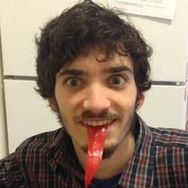
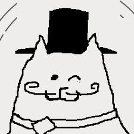
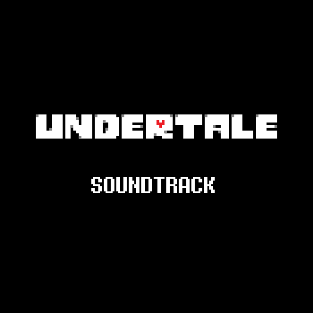

Toby Fox, pseudonimo di Robert F. Fox, (Manchester, 11 ottobre 1991[1]), è un autore di videogiochi e compositore statunitense. Conosciuto anche con il soprannome Radiation,
deve la propria notorietà principalmente allo sviluppo del videogioco di culto Undertale nel 2015[2] e alla creazione e sviluppo di Deltarune, sebbene godesse già di discreta fama presso il fandom del fumetto online Homestuck,
del quale aveva composto la colonna sonora. Nel 2017 ha composto la colonna sonora di Hiveswap, videogioco che con Homestuck condivide l'ambientazione.[3] Dal 2019 collabora attivamente con Nintendo e le aziende ad essa affiliate,
avendo composto musica per Super Smash Bros. Ultimate, Little Town Hero,
Pokémon Spada e Scudo e Pokémon Scarlatto e Violetto.

Il volto di Toby FoxVisita il suo sito web

Mascotte spesso usata dall'artista Ascolta le soundtrack di Undertale

Album Musicale dal gioco Undertale